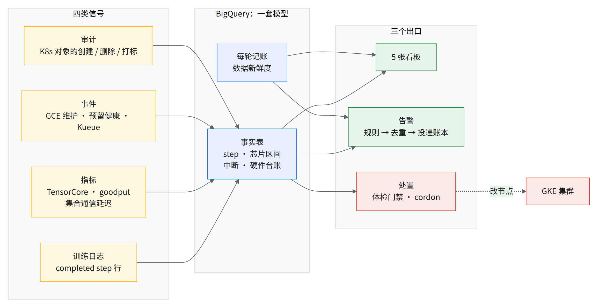
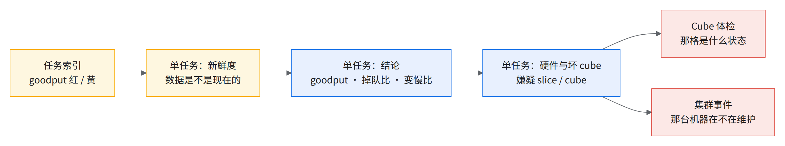

08b 可观测性：看什么、怎么看、怎么靠它找到问题
要解决什么
- 08 给了 29 条告警和 14 条日志查询，但它们是散的。值班的人想知道「这个 job 现在好不好、慢在哪、钱花哪了」，得自己拼五六个控制台。
- 下面是一套参考设计：把这些问题收进 5 张看板和一条告警出口。这一章讲它的思路：观测哪些对象、口径怎么定、看板怎么排、出了事怎么一步步下钻。
难在哪
- 现成信号有不少是假的。Cloud Monitoring 自带的利用率均值明显虚高；慢节点在 GKE 里一直显示 Ready / HEALTHY（见经验教训第 48 条）。
- 有些正常状态长得像故障。四成多的 slice 先报一次
SliceCreationFailed再自己成功，照字面告警会一直响。- 监控自己也会停。建模循环停住时看板照常显示旧数，没人报警。
- 9 类观测对象：job、吞吐与 goodput、变慢与掉队、中断与恢复、节点体检、平台事件、告警投递、财务、数据新鲜度
- 4 类信号来源：训练日志、指标、事件、审计
- 5 张看板，上百个面板；1 个原则：先落 BigQuery，再出图
- 2 条落地路线：最小版（零常驻进程）／完整版（§8b.6）
💡一句话结论
- 所有出口读同一批表。 告警、看板、财务报表、自动处置都从同一套 BigQuery 模型出数，「看板说慢」和「告警说慢」不会是两个口径。
- 看板的第一行永远是数据新鲜度，其次是结论，最后才是证据。先确认「我看到的是不是现在」，再看「现在好不好」。
- 最值得抄的三条口径：
- 利用率一律除以已付费芯片小时。
- 「卡住」要两个信号同时成立。
- 监控自己的每一轮都记账，并对账本告警。
- 使用方先上最小版：只把 step 日志引进 BigQuery，没有常驻进程，就能看到所有 job 的 step 曲线和「卡住」判定。完整版要等告警通道、体检门禁、价目表三件事定了再上。
总图

读图：
- 左边四类信号各有延迟。step 日志是秒级，指标导出每 30 分钟一批，审计每 5 分钟一批。
- 中间那本账（「每轮记账」）也接到告警上。
- 红色出口会改集群。使用方照搭时先放在 shadow（只记录、不动手）。
8b.1要观测什么
四类信号的意思：
- 训练日志：训练程序自己打的 step 行。
- 指标：Cloud Monitoring 的时间序列。
- 事件：GCE、预留、Kueue 报出来的状态变化。也包括定时去轮询的状态。
- 审计：K8s API 的审计日志，谁在什么时候建、删、改了哪个对象。
维度从粗到细是：job → slice → cube（16 台主机的 sub-block）→ host。
| 对象 | 为什么看 | 最细到 | 主要信号 |
|---|---|---|---|
| job | 一切的主键 | job × 尝试 | 审计 |
| 吞吐与 goodput | 跑得值不值 | job | 训练日志、指标 |
| 变慢与掉队 | 一片慢拖全局 | slice → cube | 训练日志、指标 |
| 中断与恢复 | 时间丢在哪 | job × 原因 | 审计、事件 |
| 节点体检 | 坏机器别进生产 | cube | 体检结果、审计 |
| 平台事件 | 平台在动你的机器 | host → 预留 | 事件 |
| 告警投递 | 告警发了不等于送到 | 每条告警 | 自己的账本 |
| 财务 | 钱花哪了 | 全局 → job | 指标、事件 |
| 数据新鲜度 | 看到的是不是现在 | 每张表 | 自己的账本 |
job：先认清「谁在跑」
- 为什么看：后面每个数都要挂到一个 job 上。job 认错，掉队、中断、花费全算错。
- 口径：job 的身份是 JobSet 名 + uid，从 K8s 审计日志里推出来，不靠训练侧上报。
- 同名 job 跑了多次，按 uid 分成多次运行。
- 一次运行里的每次重启算一次「尝试」。
- 结局也从审计里读。JobSet 没了但审计里找不到终态的，单独标成「已停止（未记录结局）」，不算成功。
- 信号：审计。
吞吐与 goodput：跑得值不值
- 为什么看：芯片小时是钱，step 才是产出。
- 关键指标：
- 步时：中位和最慢 rank。
- TFLOP/s/device、tokens/s/device。
- goodput 和逐类 badput：启动与准备、数据加载、中断与恢复等。
- 口径：
- 每个 pod 都打一行 step 日志，所以先按 (job, 尝试, step) 去重。步时取最慢的那个 pod，并记下是谁。
- goodput 分两种，看板上标明：
- measured：训练侧开了 goodput 上报，读的是上报的值。
- 估算：没开上报，只能按 step 时间推。
- 「重做的 step」：step 号低于这个 job 已经到过的最高值的那些步。也就是从检查点重启后白跑的那段，跨重启累计。
- 信号：训练日志（step 行）、指标（goodput 上报）。
变慢与掉队：一片慢拖全局
- 为什么看：多片同步训练里，最慢那片决定全局步时。慢节点不报错、不挂，GKE 照样显示健康（见经验教训第 45 条）。
- 关键指标：
- 掉队比：最慢 rank 的步时 ÷ 中位步时，取 p90。看板 1.1 以上标黄、1.5 以上标红。
- 变慢比：当前 10 分钟步时 ÷ 前 2 小时基线。1.10 报警，回到 1.05 才解除（有回差，免得来回跳）。
- 按 slice 的集合通信延迟：慢片的延迟反而最低。集合通信要等最后到的那片，它一到就收尾，几乎不等。
- TensorCore 利用率按 pod 看。
- 口径：
- 变慢比跟自己的过去比，不跟别的 job 比，所以不用按模型或功耗分档。
- 集合通信延迟只能可靠地定位到 slice。片内是 ICI 同步的，同一片里哪个 cube 慢，这个指标分不出来。要靠下面「找坏 cube 的三层」。
- 找坏 cube 的三层：
- 跨运行：慢运行用过的 cube 取交集，减去快运行用过的 cube，再和硬件事件交叉。
- 片级：哪一片反复「最后到」。数的是每分钟「卡住的集合操作」，不看均值，免得拓扑带来的固定快慢被读成掉队；再用二项检验（Binomial test）排除偶然。
- 秒级：在嫌疑 job 的节点上按秒采集合通信延迟，定位到主机。前提是训练 pod 用 hostNetwork。
- 信号：训练日志（步时）、指标（集合通信延迟、TensorCore）。
中断与恢复：时间丢在哪
- 为什么看：大任务一天中断几次很常见。每次的代价不是「重启那一分钟」，而是「从上一个检查点到现在白跑的步 + 重新排队 + 编译 + 恢复」。
- 关键指标：按原因分类的中断次数、每次恢复花的时间、恢复期损失的芯片小时、重做的 step 数。
- 口径：
- 原因要分清「基础设施」和「作业自己」。job 页有个「中断范围」选项，建议选「仅基础设施与作业重启」。
- 昨日浪费按芯片小时算，每天汇总一次。
- 信号：审计（pod / JobSet 的生灭）、事件（GCE 维护、slice 失败）。
节点体检：坏机器别进生产
- 为什么看：坏节点大多是长时间加压才逼出来的。只靠在岗发现，等于拿生产 job 当探针。
- 关键指标：每个 cube 的体检状态、最深通过的档位（快测 / 加 soak 的标准测）、上次体检时间、为什么待检（新进门 / 修回 / 归还）。
- 口径：
- 被抢占、未准入、超时都不算体检失败。
- 测试级别取「通过过、且之后没有同套件失败的最深一档」。
- 「初始打标」单独算：由初始化命令直接标成 passed（批量或人工放行），从没实测过。
- 信号：体检结果、审计（节点标签和污点的变化）。
平台事件：平台在动你的机器
- 为什么看：平台侧的维护和修复，很多不会反映到 GKE 节点状态上。
- 关键指标：
- 当前不健康的节点：GCE 计划外维护、主机不健康。
- 预留三级健康：reservation → block → sub-block 的健康主机数。
- 计划维护排期：90 天一轮。
- Kueue 的准入和驱逐决定。
- 口径：
- 计划维护通知是挂在资源上的状态，从发出一直挂到窗口结束。所以用定时轮询读，5 分钟一轮不可能漏掉。只订阅事件流会漏。
- 主机不健康要至少 2 个 5 分钟点才算：只有一个点的 episode 很常见，单点就报会很吵。
- sub-block DEGRADED 会来回跳，也要连续几轮才算。
- 信号：事件（含轮询的状态）。
告警投递：发了不等于送到
- 为什么看：告警通道本身会坏（比如 webhook 改了、消息格式不符被丢弃）。不记账的话，「没收到告警」和「没出事」看起来一样。
- 关键指标：每条告警的去重键、规则、是 shadow 还是真发、送达结果；7 天内未送达的条数。
- 口径：
- shadow 的也记一行，只是不发。新规则先 shadow 跑一段，对完账再打开。
- 同一件事按去重键只发一次，并有冷却时间。
- 信号：告警服务自己的账本。
财务：一个分母
- 为什么看：利用率是对外汇报和扩缩容的依据。分母错了，结论就反了。
- 四层漏斗，每层都除以已付费（reserved）芯片小时，所以可以直接相减：
| 层 | 含义 | 信号 |
|---|---|---|
| A 已调度给 VM | 预留里有多少芯片分给了 VM | 指标（预留占用） |
| B 节点上有 Pod | 有 pod 的时间 × 芯片 | 指标 |
| C 卡在跑 | duty cycle × 时间 × 芯片 | 指标 |
| D 张量核忙 | TensorCore 利用率 × 时间 × 芯片 | 指标 |
- 为什么分母是已付费芯片小时：空闲的预留芯片上没有 pod，也就没有容器指标。拿「有采样的芯片」当分母，等于把这部分直接从分母里拿掉，没有按 0 算进去。
- 按需和 flex-start 的芯片在分子分母里都去掉，因为它们不占预留。
- 另有一条 FLOPs 口径：实测 TFLOP/s ÷ 峰值。TensorCore 利用率不是 MFU，两条线分开画。
- 数据不全的日子（四层出现交叉）单独列出，不计入。
数据新鲜度：看到的是不是现在
- 为什么看：建模是批处理，停了以后看板不会变红，只会一直显示上一次的数。这是最难发现的故障。
- 关键指标：
- 每张表最后一次写入的时间。
- 最后一个 step 的时间。
- 轮询距今。
- 建模每一轮的成败。
- 口径：
- 采集分「必需」和「可选」两类。可选的失败只记账，不停整轮。
- 每一轮写一行账，告警读这本账。
- job 页上距今超过 15 分钟标黄、60 分钟标红。已结束的 job 这个数自然很大，先看结局。
- 信号：自己的账本。
8b.2看板怎么展示
每张看板都按同一个顺序排
- 新鲜度：这页的数据截止到什么时候。
- 结论：几个大数字，颜色就是判断。
- 证据：曲线、明细表。
- 排查：日志、事件、诊断。贵的面板默认折叠，展开才查询。
5 张看板各管一件事，顶部导航条互相跳：
| 看板 | 回答什么 | 第一行 |
|---|---|---|
| 任务索引 | 谁在跑、谁 goodput 低 | 运行中的 job（goodput 着色） |
| 单任务 | 这个 job 好不好、慢在哪 | 数据新鲜度 |
| Cube 体检 | 哪些 cube 能放生产 | 各状态计数 |
| 集群事件 | 平台层发生了什么 | 维护排期、降级预留、轮询距今、未送达告警 |
| 财务口径 | 钱花哪了 | 口径说明（看数之前先读它） |
颜色和分级
- 绿 / 黄 / 红就是判断，不需要再对照阈值表：
| 量 | 绿 | 黄 | 红 |
|---|---|---|---|
| goodput | ≥ 60% | 25–60% | < 25% |
| 数据新鲜度 | < 15 min | 15–60 min | ≥ 60 min |
| 掉队比（p90） | < 1.1 | 1.1–1.5 | ≥ 1.5 |
| 轮询距今 | < 10 min | 10–30 min | ≥ 30 min |
| 未送达告警 | 0 | — | ≥ 1 |
| 全局利用率 | ≥ 60% | 30–60% | < 30% |
- 体检网格里一格一个 cube，颜色是状态。多个状态同时成立时，按这个优先级取第一个：
- 不通过 → 体检中 → 待体检 → cordon → 维护中 → 硬件告警 → 超期未复测 → 正常 → 未接管 → 未建池。
- 绿是正常，黄是待体检，红是硬件告警，紫是维护中。
- 格子后缀
L表示只过了快测，S表示过了加 soak 的标准测。圆点表示上面有生产 job。
下钻路径：总览 → 单任务 → 坏 cube

- 在索引页点 job 名进单任务页。
- 单任务页往下，依次是 goodput 拆分、速度、变慢记录、数值健康、排查、实时资源、硬件与坏 cube。
- 从嫌疑 cube 再跳到体检页和事件页，看它是不是本来就在维护或告警。
财务页：逐层留存，找最大的那一刀
- 四层漏斗画成横条，同一个分母，所以条和条可以直接比。
- 从头往下看哪一层掉得最多。
- 如果 B → C 这一刀最大，说明 pod 占着卡却没在跑，比如在排队、装载、恢复。
- 第二个看板是同一分母的逐日走势，以及芯片小时的绝对量。
- 比例掉了先看绝对量。绝对量突然变大多半是新预留交付了，比例下降是因为分母一下变大，不是用得更差 [推断]。
8b.3常见反模式
常见反模式（监控停了没人知道、用采样到的芯片当分母、信 GKE 节点状态判硬件、把「标着 passed」当「测过」、门禁动作用污点表达等）连同实例和改法，统一列在 §8b.5 反模式表。
8b.4和 04 / 08 / 08a 的接口
08 的告警在这套设计里对应什么：
| 08 告警 | 这套设计里的信号 | 看板位置 | 差别 |
|---|---|---|---|
| #17 无新 step | 卡住规则：日志指标断流 且 TensorCore < 5% | 单任务：新鲜度、最大 step；索引：goodput | 多一道 TensorCore 确认，指标断了不会误报 |
| #18 一片 / 一台掉队 | 变慢规则；片级「最后到达」；跨运行坏 cube | 单任务：掉队比、变慢比、按 slice 最后到达 | 08 按功耗档分阈值；这套设计跟自己前 2 小时比 |
| #19 每整 pod（整池）每天中断 | 按原因分类的中断 + 昨日浪费 | 单任务：中断与恢复；事件页 | 多算出恢复期损失的芯片小时 |
| 硬件 / 维护 | 硬件台账，节点空闲也报 | 事件：当前不健康节点 | 可以接自动 cordon |
| （08 没有）监控断档 | 每轮记账 + 新鲜度 | 单任务第一行；事件：轮询距今 | 对「监控本身」告警 |
08a 慢节点流程每一步，看板上看哪个信号：
| 08a 步骤 | 看板信号 |
|---|---|
| 进门关（§8a.3） | 体检页：待检原因 = 新进门 / 修回；格子后缀 L / S |
| 例行关（§8a.3） | 体检页：超期未复测；体检记录 |
| 在岗关：步时一步跳上（§8a.4） | 单任务：步时中位 / 最慢 rank；变慢比 |
| 在岗关：按片延迟最低 | 单任务：按 slice 最后到达次数 |
| 在岗关：TensorCore 按 pod | 单任务：实时资源 |
| 取证 → 挪走对比（§8a.5） | 单任务：硬件与坏 cube（嫌疑 cube 和硬件事件交叉）；事件页 |
| 离线复测 | 嫌疑 cube 登记后，等它空了自动去测；体检页看结果 |
| cordon + 注解（§8a.6） | 事件页：cordon 提议；自动 cordon 只处理硬件证据，统计类嫌疑留给人 |
08a 把自动 cordon 列为按需自建。这套设计的自动 cordon、送修打污点、体检门禁就是这个「可选」的现成做法，默认都该先放在 shadow。
和 04 的关系：这套设计的体检用的是现有的 cube 检测套件，和 04 的 C1/C2/C3 不是同一套。使用方已经用 04 的脚本做准入的话，把结果写进同一张体检记录表，就能复用体检页和门禁，不必换套件 [推断]。两边判法也不同：它看「卡死 / pod 消失 / 送修」，不设性能阈值；04 有数值阈值。两种合起来用。
8b.5设计原则和反模式
原则
- 先落 BigQuery，再出图。 告警、看板、处置读同一批表，口径只有一份。
- 默认状态不能长得像错误状态。
- 近半数 slice 先报过一次
SliceCreationFailed，其中绝大多数最后 ACTIVE。所以这个状态不能当告警。 - 每天数百次建作业失败（webhook 调用失败或被拒），也是常态。要分清「webhook 暂时不可用」和「被拒」。
- 体检里被抢占、未准入、超时不算失败。
- 近半数 slice 先报过一次
- 监控本身要被监控。 每轮记账、新鲜度放第一行、轮询距今、未送达告警。可选依赖失败不拖垮整轮。
- 一个结论至少两个信号。
- 卡住 = step 断流 且 TensorCore < 5%。
- 主机不健康要连续 2 个点。
- sub-block 降级要连续几轮。
- 状态优于事件。 维护通知、预留健康是挂在资源上的状态，用轮询读，不会漏；事件流会漏。
- 检测和动手分开。 检测器只登记嫌疑，不碰集群；动手的服务等 cube 空了再测、再改门禁。两边的权限和出事范围都分开。
- 先 shadow，再实打。 新规则（比如送修打污点）先 shadow 一段时间，只记账不发，对完账再实打。
- 一个分母，一个原子粒度。 财务每一层都除以已付费芯片小时，层与层可以直接相减。所有芯片量都从「每芯片每 5 分钟一行」这一张表汇总：几张表各自从原始指标算、加权方法不同的话，结果会互相对不上。
- 贵的面板默认折叠。 多 slice / DCN 的 16 个面板展开才查询，免得每次打开都扫一遍。
反模式
| 反模式 | 实例 | 怎么改 |
|---|---|---|
| 照字面对状态告警 | SliceCreationFailed 是常态；MegascaleHangDetected 在绝大多数节点上为 True，原因全空 |
先统计常态分布，再定告警条件 |
| 失败放行的门禁不配兜底 | 门禁策略 failurePolicy: Ignore，挂了就静默放行 |
加一条「没带 passed 选择器的 TPU 任务数 > 0」告警 |
| 门禁动作用污点表达 | 打体检污点后，调度器立刻把在跑的 job 当节点故障驱逐 | 改成提交时加节点选择器 |
| 把「标着 passed」当「测过」 | 批量初始打标的 passed 节点大多没实测过 | 报实测覆盖率；只写通过不写失败的判定要补「失败」 |
| 信 GKE 节点状态判硬件 | 计划外维护中的节点照样 Ready / HEALTHY，一个 job 慢了一天 | 硬件状态以 GCE 为准，节点空闲也报 |
| 用采样到的芯片当分母 | 自带看板明显虚高 | 一律用已付费芯片小时 |
| 一个可选依赖拖垮整轮 | 一个采集器出错，整轮建模停住、看板照常显示旧数 | 依赖分级 + 每轮记账 + 对账本告警 |
| 开关语义不统一 | 自动 uncordon 开关只认 off / 0 / false，写 shadow 等于打开 | 所有开关用同一套取值；上线前逐个核 |
| 匿名用户给管理员 | Grafana 匿名角色可被设成 Admin，部署时常被忽略 | 匿名只给只读 |
| 自动 cordon 滞后却当主防线 | 从开始故障到被自动 cordon 可能隔几个小时以上 | 以 GCE 送修状态直接挡调度，cordon 只是补充 |
8b.6使用方怎么落地
两条路。先最小版，跑一两周再决定要不要上完整版。
| 最小版 | 完整版 | |
|---|---|---|
| 得到什么 | 所有 job 的最新 step、卡没卡住；步时、TFLOP/s、loss 曲线；Cloud Monitoring 的 TensorCore / goodput / 集合通信延迟 | 5 张看板全部；告警出口；体检门禁；自动 cordon；坏 cube 诊断；财务 |
| 组件类别 | 日志路由 1 条、消息队列 1 个（带 BigQuery 订阅和单消息变换）、BigQuery 数据集 1 个（1 张表 + 2 个视图）、看板 1 张 | 几条日志路由、几个消息队列和数据集（上百张表 / 视图）、若干镜像、定时任务和常驻服务、二十多个调度、集群内 RBAC 和可选的准入策略 |
| 常驻进程 | 无，全托管 | 有（Cloud Run 按调度跑） |
| 权限 | 建日志路由、消息队列、数据集的项目权限；看板服务账号要数据集只读、BigQuery 查询、Monitoring 只读；Pub/Sub 服务代理要能写 BigQuery | 每个组件一个服务账号，权限分开；只读面最宽的是建模账号（日志、指标、计算、集群、ML Diagnostics 只读）；改节点的权限全在集群 RBAC 里，不在 IAM |
| 成本量级 | 只收 step 行，存储和查询都很小 [推断，未核] | 建模查询费是大头，存储费很小；上百个面板里大部分带 BigQuery 查询（其余是文本、日志等不查表的面板 [推断]）按 1 天窗口各查一次，扫描上限约 0.1 TB；Cloud Run / 调度 / Pub/Sub [未核] |
| 卡住判定 | 只看多久没出新 step，没有 TensorCore 确认，长检查点会误判 | 两个信号同时成立 |
最小版的数据链（全托管，按下面五步自己建；每步一条 gcloud / bq 命令就够）：
- Cloud Logging 日志路由：过滤训练容器 stdout 里 MaxText 的
completed step: N, seconds: x, TFLOP/s/device: y, … loss: z行，导到一个 Pub/Sub topic。 - 这个 topic 建一个 BigQuery 订阅，挂单消息变换（SMT），把那行解析成 job、step、步时、TFLOP/s、loss 几列，写进一张按天分区的表（建议分区 30 天过期）。
- 在表上建两个视图：每个 job × step 去重一行；每个 job 的最新 step、近 50 步中位步时、「卡住」标志（多久没出新 step，例如 > 10 min 或 > 中位步时 × 20）。
- Grafana 建一张看板：BigQuery 数据源读这两个视图；Cloud Monitoring 数据源直接读 TensorCore 利用率 / goodput，不落表。
- 权限：Pub/Sub 服务代理要能写这个数据集；Grafana 的服务账号要
roles/bigquery.dataViewer（该数据集）、roles/bigquery.jobUser、roles/monitoring.viewer。
跑通的判据：随便挑一个在跑的 job，看板上的最新 step 与它日志里最后一行 completed step 相差不超过一两步；手动停一个 job，超过阈值后「卡住」标志变真。
完整版之前要先定的事：
- 告警通道：要接到使用方自己的 IM 或别的。消息格式要改 [推断]。
- 体检门禁上不上：上的话先只在一个集群、先 shadow；同时配 §8b.5 那条兜底告警。
- 价目表：财务的金额列要按实际单价自建。不建只缺金额，比例照样有。
- 节点 / pod 标签前缀：换成使用方自己的。
- 日志格式：step 行的解析按 MaxText 写。不用 MaxText 要改解析规则；没开 goodput 上报就只有估算 goodput。
- 体检套件：可以换成 04 的验收脚本 [推断]。
- 安全开关：自动 cordon、自动 uncordon、送修打污点、体检、自动诊断，第一周全部 shadow / off；Grafana 匿名只读。
- 完整版没在一个空项目里从零跑通过。
- 真实账单没查。
- BigQuery 走按量还是 slot 预留没看到配置。
- 使用方有没有现成的 Grafana。
8b.7缺口与未核
-
[未核] 花费：上面只给了量级，没有拿账单核对。
-
[未核] 秒级诊断：要求训练 pod 用 hostNetwork。使用方的 JobSet 骨架是不是 hostNetwork，要对一下。
-
没覆盖：推理服务的可观测性。这套设计只管训练。
检查点
做完了（对应 README 交付清单 H）
- 最小版跑通（按 §8b.6「最小版的数据链」五步建好，并过了那里的判据）：所有在跑的 job 都能看到最新 step 和「卡没卡住」
- 告警通道、体检门禁、价目表、标签前缀四件事已和使用方定下
- 完整版（如上）的安全开关第一周全部 shadow / off，Grafana 匿名只读
- 「监控本身」至少有一条告警：建模或采集停了能报出来
- 上了失败放行的门禁的话，兜底告警已配
说得出（先自己答，再点开对答案）
为什么自带的利用率看板不能对账？
分母只算有采样的芯片，空闲预留芯片没有序列；所以明显虚高为什么每张看板第一行是数据新鲜度？
建模停了看板不变红，只显示旧数为什么慢的那片集合通信延迟反而最低？
大家等最后到的，它一到就收尾「卡住」为什么要加 TensorCore < 5%？
日志指标断流时不至于把还在算的 job 报成卡住「标着 passed」为什么不等于测过？
批量初始打标的节点是直接标成 passed 的，大多没实测过为什么
SliceCreationFailed不能当告警？四成多的 slice 先报一次再自己成功，是常态
交棒：回 README 交付清单 H 打勾；告警出口、谁看看板、谁能开自动处置，收进 09 交付前对齐清单。
出处
- 相关章节：08 日常运维、08a 慢节点标准流程、04 功能验证；问题单经验教训第 48 条、经验教训第 45 条